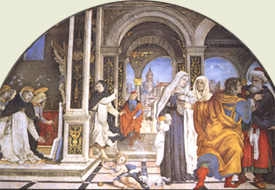
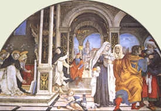

|  |
|---|
Textum Leoninum Romae 1897 editum
et automato translatum a Roberto Busa SJ in taenias magneticas
denuo recognovit Enrique Alarcón atque instruxit


|  |
|---|


[43318] IIª-IIae q. 101 pr. Deinde, post religionem, considerandum est de pietate. Cuius opposita vitia ex ipsius consideratione innotescunt. Circa pietatem ergo quaeruntur quatuor. Primo, ad quos pietas se extendat. Secundo, quid per pietatem aliquibus exhibeatur. Tertio, utrum pietas sit specialis virtus. Quarto, utrum religionis obtentu sit pietatis officium praetermittendum.
[43319] IIª-IIae q. 101 a. 1 arg. 1 Ad primum sic proceditur. Videtur quod pietas non se extendat ad determinatas personas aliquorum hominum dicit enim Augustinus, in X de Civ. Dei, quod pietas proprie Dei cultus intelligi solet, quam Graeci eusebiam vocant. Sed Dei cultus non dicitur per comparationem ad homines, sed solum ad Deum. Ergo pietas non se extendit determinate ad aliquas hominum personas.
[43320] IIª-IIae q. 101 a. 1 arg. 2 Praeterea, Gregorius dicit, in I Moral., pietas in die suo convivium exhibet, quia cordis viscera misericordiae operibus replet. Sed opera misericordiae sunt omnibus exhibenda, ut patet per Augustinum, in I de Doct. Christ. Ergo pietas non se extendit determinate ad aliquas speciales personas.
[43321] IIª-IIae q. 101 a. 1 arg. 3 Praeterea, multae sunt aliae in humanis rebus communicationes praeter consanguinitatem et concivium communicationem, ut patet per philosophum, in VIII Ethic., et super quamlibet earum aliqua amicitia fundatur, quae videtur esse pietatis virtus, ut dicit Glossa, II ad Tim. III, super illud. Habentes quidem speciem pietatis. Ergo non solum ad consanguineos et concives pietas se extendit.
[43322] IIª-IIae q. 101 a. 1 s. c. Sed contra est quod Tullius dicit, in sua rhetorica, pietas est per quam sanguine iunctis, patriaeque benevolis, officium et diligens tribuitur cultus.
[43323] IIª-IIae q. 101 a. 1 co. Respondeo dicendum quod homo efficitur diversimode aliis debitor secundum diversam eorum excellentiam, et diversa beneficia ab eis suscepta. In utroque autem Deus summum obtinet locum, qui et excellentissimus est, et est nobis essendi et gubernationis primum principium. Secundario vero nostri esse et gubernationis principium sunt parentes et patria, a quibus et in qua et nati et nutriti sumus. Et ideo post Deum, maxime est homo debitor parentibus et patriae. Unde sicut ad religionem pertinet cultum Deo exhibere, ita secundo gradu ad pietatem pertinet exhibere cultum parentibus et patriae. In cultu autem parentum includitur cultus omnium consanguineorum, quia etiam consanguinei ex hoc dicuntur quod ex eisdem parentibus processerunt, ut patet per philosophum, in VIII Ethic. In cultu autem patriae intelligitur cultus concivium, et omnium patriae amicorum. Et ideo ad hos principaliter pietas se extendit.
[43324] IIª-IIae q. 101 a. 1 ad 1 Ad primum ergo dicendum quod in maiori includitur minus. Et ideo cultus qui Deo debetur includit in se, sicut aliquid particulare, cultum qui debetur parentibus. Unde dicitur Malach. I, si ego pater, ubi honor meus? Et ideo nomen pietatis etiam ad divinum cultum refertur.
[43325] IIª-IIae q. 101 a. 1 ad 2 Ad secundum dicendum quod, sicut Augustinus dicit, in X de Civ. Dei, more vulgi nomen pietatis etiam in operibus misericordiae frequentatur. Quod ideo arbitror evenisse quia haec fieri praecipue mandat Deus, eaque sibi vel pro sacrificiis placere testatur. Ex qua consuetudine factum est ut et Deus ipse pius dicatur.
[43326] IIª-IIae q. 101 a. 1 ad 3 Ad tertium dicendum quod communicatio consanguineorum et concivium magis referuntur ad principia nostri esse quam aliae communicationes. Et ideo ad hoc nomen pietatis magis extenditur.
[43327] IIª-IIae q. 101 a. 2 arg. 1 Ad secundum sic proceditur. Videtur quod pietas non exhibeat parentibus sustentationem. Ad pietatem enim videtur pertinere illud praeceptum Decalogi, honora patrem tuum et matrem tuam. Sed ibi non praecipitur nisi honoris exhibitio. Ergo ad pietatem non pertinet sustentationem parentibus exhibere.
[43328] IIª-IIae q. 101 a. 2 arg. 2 Praeterea, illis debet homo thesaurizare quos tenetur sustentare. Sed secundum apostolum, II ad Cor. XII, filii non debent thesaurizare parentibus. Ergo non tenentur eos per pietatem sustentare.
[43329] IIª-IIae q. 101 a. 2 arg. 3 Praeterea, pietas non solum se extendit ad parentes, sed etiam ad alios consanguineos et concives, ut dictum est. Sed non tenetur aliquis omnes consanguineos et concives sustentare. Ergo nec etiam tenetur ad sustentationem parentum.
[43330] IIª-IIae q. 101 a. 2 s. c. Sed contra est quod dominus, Matth. XV, redarguit Pharisaeos quod impediebant filios ne parentibus sustentationem exhiberent.
[43331] IIª-IIae q. 101 a. 2 co. Respondeo dicendum quod parentibus aliquid debetur dupliciter, uno modo, per se; alio modo, per accidens. Per se quidem debetur eis id quod decet patrem inquantum est pater. Qui cum sit superior, quasi principium filii existens, debetur ei a filio reverentia et obsequium. Per accidens autem aliquid debetur patri quod decet eum accipere secundum aliquid quod ei accidit, puta, si sit infirmus, quod visitetur, et eius curationi intendatur; et si sit pauper, quod sustentetur; et sic de aliis huiusmodi, quae omnia sub debito obsequio continentur. Et ideo Tullius dicit quod pietas exhibet et officium et cultum. Ut officium referatur ad obsequium, cultus vero ad reverentiam sive honorem; quia, ut Augustinus dicit, in X de Civ. Dei, dicimur colere homines quos honorificatione, vel recordatione, vel praesentia frequentamus.
[43332] IIª-IIae q. 101 a. 2 ad 1 Ad primum ergo dicendum quod in honoratione parentum intelligitur omnis subventio quae debet parentibus exhiberi, ut dominus interpretatur, Matth. XV. Et hoc ideo, quia subventio fit patri ex debito, tanquam maiori.
[43333] IIª-IIae q. 101 a. 2 ad 2 Ad secundum dicendum quod quia pater habet rationem principii, filius autem habet rationem a principio existentis, ideo per se patri convenit ut subveniat filio; et propter hoc, non solum ad horam debet ei subvenire, sed ad totam suam vitam, quod est thesaurizare. Sed quod filius aliquid conferat patri, hoc est per accidens, ratione alicuius necessitatis instantis, in qua tenetur ei subvenire, non autem thesaurizare, quasi in longinquum, quia naturaliter non parentes filiorum, sed filii parentum sunt successores.
[43334] IIª-IIae q. 101 a. 2 ad 3 Ad tertium dicendum quod cultus et officium, ut Tullius dicit, debetur omnibus sanguine iunctis et patriae benevolis, non tamen aequaliter omnibus, sed praecipue parentibus, aliis autem secundum propriam facultatem et decentiam personarum.
[43335] IIª-IIae q. 101 a. 3 arg. 1 Ad tertium sic proceditur. Videtur quod pietas non sit specialis virtus ab aliis distincta. Exhibere enim obsequium et cultum aliquibus ex amore procedit. Sed hoc pertinet ad pietatem. Ergo pietas non est virtus a caritate distincta.
[43336] IIª-IIae q. 101 a. 3 arg. 2 Praeterea, cultum Deo exhibere est proprium religionis. Sed etiam pietas exhibet Deo cultum, ut Augustinus dicit, X de Civ. Dei. Ergo pietas non distinguitur a religione.
[43337] IIª-IIae q. 101 a. 3 arg. 3 Praeterea, pietas quae exhibet cultum et officium patriae videtur idem esse cum iustitia legali, quae respicit bonum commune. Sed iustitia legalis est virtus generalis, ut patet per philosophum, in V Ethic. Ergo pietas non est virtus specialis.
[43338] IIª-IIae q. 101 a. 3 s. c. Sed contra est quod ponitur a Tullio pars iustitiae.
[43339] IIª-IIae q. 101 a. 3 co. Respondeo dicendum quod virtus aliqua est specialis ex hoc quod respicit aliquod obiectum secundum aliquam rationem specialem. Cum autem ad rationem iustitiae pertineat quod debitum alii reddat, ubi invenitur specialis ratio debiti alicui personae, ibi est specialis virtus. Debetur autem aliquid specialiter alicui quia est connaturale principium producens in esse et gubernans. Hoc autem principium respicit pietas, inquantum parentibus et patriae, et his qui ad haec ordinantur, officium et cultum impendit. Et ideo pietas est specialis virtus.
[43340] IIª-IIae q. 101 a. 3 ad 1 Ad primum ergo dicendum quod sicut religio est quaedam protestatio fidei, spei et caritatis, quibus homo primordialiter ordinatur in Deum; ita etiam pietas est quaedam protestatio caritatis quam quis habet ad parentes et ad patriam.
[43341] IIª-IIae q. 101 a. 3 ad 2 Ad secundum dicendum quod Deus longe excellentiori modo est principium essendi et gubernationis quam pater vel patria. Et ideo alia virtus est religio, quae cultum Deo exhibet, a pietate, quae exhibet cultum parentibus et patriae. Sed ea quae sunt creaturarum per quandam superexcellentiam et causalitatem transferuntur in Deum, ut Dionysius dicit, in libro de Div. Nom. Unde per excellentiam pietas cultus Dei nominatur, sicut et Deus excellenter dicitur pater noster.
[43342] IIª-IIae q. 101 a. 3 ad 3 Ad tertium dicendum quod pietas se extendit ad patriam secundum quod est nobis quoddam essendi principium, sed iustitia legalis respicit bonum patriae secundum quod est bonum commune. Et ideo iustitia legalis magis habet quod sit virtus generalis quam pietas.
[43343] IIª-IIae q. 101 a. 4 arg. 1 Ad quartum sic proceditur. Videtur quod occasione religionis sint praetermittenda pietatis officia in parentes. Dicit enim dominus, Luc. XIV, si quis venit ad me, et non odit patrem suum et matrem et uxorem, fratres, filios et sorores, adhuc autem et animam suam, non potest meus esse discipulus. Unde et in laudem Iacobi et Ioannis, Matth. IV, dicitur quod, relictis retibus et patre, secuti sunt Christum. Et in laudem Levitarum dicitur, Deut. XXXIII, qui dixit patri suo et matri suae, nescio vos; et fratribus suis, ignoro illos; et nescierunt filios suos, hi custodierunt eloquium tuum. Sed ignorando parentes et alios consanguineos, vel etiam eos odiendo, necesse est quod praetermittantur pietatis officia. Ergo propter religionem officia pietatis sunt praetermittenda.
[43344] IIª-IIae q. 101 a. 4 arg. 2 Praeterea, Matth. VIII et Luc. IX dicitur quod dominus dicenti sibi, permitte mihi primum ire et sepelire patrem meum, respondit, sine ut mortui sepeliant mortuos suos. Tu autem vade et annuntia regnum Dei, quod pertinet ad religionem. Sepultura autem patris pertinet ad pietatis officium. Ergo pietatis officium est praetermittendum propter religionem.
[43345] IIª-IIae q. 101 a. 4 arg. 3 Praeterea, Deus per excellentiam dicitur pater noster. Sed sicut per pietatis obsequia colimus parentes, ita per religionem colimus Deum. Ergo praetermittenda sunt pietatis obsequia propter religionis cultum.
[43346] IIª-IIae q. 101 a. 4 arg. 4 Praeterea, religiosi tenentur ex voto, quod transgredi non licet, suae religionis observantias implere. Secundum quas suis parentibus subvenire impediuntur, tum propter paupertatem, quia proprio carent; tum etiam propter inobedientiam, quia sine licentia suorum praelatorum eis claustrum exire non licet. Ergo propter religionem praetermittenda sunt pietatis officia in parentes.
[43347] IIª-IIae q. 101 a. 4 s. c. Sed contra est quod dominus, Matth. XV, redarguit Pharisaeos, qui intuitu religionis honorem parentibus debitum subtrahere docebant.
[43348] IIª-IIae q. 101 a. 4 co. Respondeo dicendum quod religio et pietas sunt duae virtutes. Nulla autem virtus alii virtuti contrariatur aut repugnat, quia secundum philosophum, in praedicamentis, bonum non est bono contrarium. Unde non potest esse quod pietas et religio se mutuo impediant, ut propter unam alterius actus excludatur. Cuiuslibet enim virtutis actus, ut ex supra dictis patet, debitis circumstantiis limitatur, quas si praetereat, iam non erit virtutis actus, sed vitii. Unde ad pietatem pertinet officium et cultum parentibus exhibere secundum debitum modum. Non est autem debitus modus ut plus homo intendat ad colendum patrem quam ad colendum Deum, sed sicut Ambrosius dicit, super Luc., necessitudini generis divinae religionis pietas antefertur. Si ergo cultus parentum abstrahat nos a cultu Dei, iam non esset pietatis parentum insistere cultui contra Deum. Unde Hieronymus dicit, in epistola ad Heliodorum, per calcatum perge patrem, per calcatam perge matrem, ad vexillum crucis evola. Summum genus pietatis est in hac re fuisse crudelem. Et ideo in tali casu dimittenda sunt officia in parentes propter divinum religionis cultum. Si vero exhibendo debita obsequia parentibus non abstrahamur a divino cultu, hoc iam pertinebit ad pietatem. Et sic non oportebit propter religionem pietatem deserere.
[43349] IIª-IIae q. 101 a. 4 ad 1 Ad primum ergo dicendum quod Gregorius, exponens illud verbum domini, dicit quod parentes quos adversarios in via Dei patimur, odiendo et fugiendo nescire debemus. Si enim parentes nostri nos provocent ad peccandum, et abstrahant nos a cultu divino, debemus quantum ad hoc eos deserere et odire. Et hoc modo dicuntur Levitae suos consanguineos ignorasse, quia idololatris, secundum mandatum domini, non pepercerunt, ut habetur Exod. XXXII. Iacobus autem et Ioannes laudantur ex hoc quod secuti sunt dominum dimisso parente, non quia eorum pater eos provocaret ad malum, sed quia aliter aestimabant ipsum posse vitam transigere, eis sequentibus Christum.
[43350] IIª-IIae q. 101 a. 4 ad 2 Ad secundum dicendum quod dominus ideo prohibuit discipulum a sepultura patris, quia, sicut Chrysostomus dicit, per hoc eum dominus a multis malis eripuit, puta luctibus et maeroribus, et aliis quae hinc expectantur. Post sepulturam enim necesse erat et testamenta scrutari, et haereditatis divisionem, et alia huiusmodi. Et praecipue quia alii erant qui complere poterant huius funeris sepulturam. Vel, sicut Cyrillus exponit, super Lucam, discipulus ille non petiit quod patrem iam defunctum sepeliret, sed adhuc viventem in senectute sustentaret usquequo sepeliret. Quod dominus non concessit, quia erant alii qui eius curam habere poterant, linea parentelae adstricti.
[43351] IIª-IIae q. 101 a. 4 ad 3 Ad tertium dicendum quod hoc ipsum quod parentibus carnalibus ex pietate exhibemus, in Deum referimus, sicut et alia misericordiae opera quae quibuscumque proximis impendimus, Deo exhibita videntur secundum illud Matth. XXV, quod uni ex minimis meis fecistis, mihi fecistis. Et ideo si carnalibus parentibus nostra obsequia sunt necessaria, ut sine his sustentari non possint; nec nos ad aliquid contra Deum inducant, non debemus intuitu religionis eos deserere. Si autem sine peccato eorum obsequiis vacare non possumus; vel etiam si absque nostro obsequio possunt sustentari, licitum est eorum obsequia praetermittere ad hoc quod amplius religioni vacemus.
[43352] IIª-IIae q. 101 a. 4 ad 4 Ad quartum dicendum quod aliud est dicendum de eo qui est adhuc in saeculo constitutus, et aliud de eo qui est iam in religione professus. Ille enim qui est in saeculo constitutus, si habet parentes qui sine ipso sustentari non possunt, non debet, eis relictis, religionem intrare, quia transgrederetur praeceptum de honoratione parentum. Quamvis dicant quidam quod etiam in hoc casu licite posset eos deserere, eorum curam Deo committens. Sed si quis recte consideret, hoc esset tentare Deum, cum habens ex humano consilio quid ageret, periculo parentes exponeret sub spe divini auxilii. Si vero sine eo parentes vitam transigere possent, licitum esset ei, desertis parentibus, religionem intrare. Quia filii non tenentur ad sustentationem parentum nisi causa necessitatis, ut dictum est. Ille vero qui iam est in religione professus, reputatur iam quasi mortuus mundo. Unde non debet occasione sustentationis parentum exire claustrum, in quo Christo consepelitur, et se iterum saecularibus negotiis implicare. Tenetur tamen, salva sui praelati obedientia et suae religionis statu, pium studium adhibere qualiter eius parentibus subveniatur.